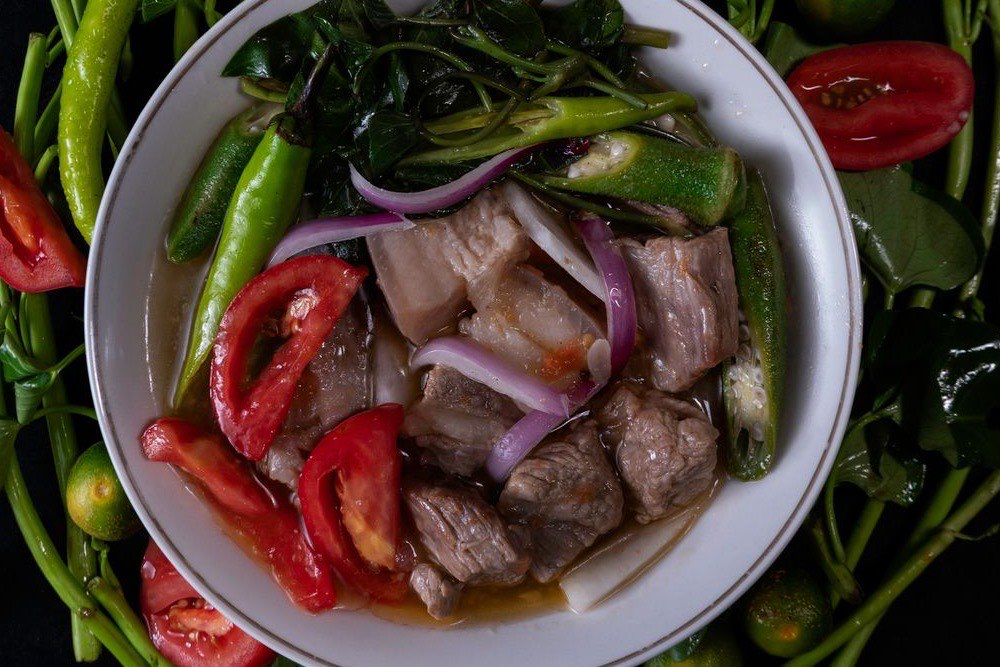

Pork Sinigang (Sinigang na Baboy)
The sour tamarind soup Filipinos crave on rainy days and homesick nights
By Sam · Published July 3, 2026 · Updated July 21, 2026

Sinigang is less a fixed recipe than a technique: simmer meat and vegetables in a sour broth. Tamarind (sampalok) is the classic souring agent, though guava, kamias, or green mango all work. This pork version is the one most associated with the dish nationally — deeply savory, brightly sour, and built to be eaten with a mountain of rice.
Ingredients
- 1 kg pork ribs or belly, cut into chunks
- 1 onion, quartered
- 2 tomatoes, quartered
- 1 sachet (40 g) tamarind (sinigang sa sampalok) mix, or fresh tamarind
- 2 tbsp fish sauce (patis)
- 1 radish (labanos), sliced
- 1 bunch string beans (sitaw), cut into 2-inch lengths
- 2 eggplants, sliced
- 5 pieces okra
- 2 long green chilies (siling haba)
- 1 bunch water spinach (kangkong)
- 8 cups water
Instructions
- In a large pot, bring the water to a boil with the pork, onion, and tomatoes. Skim off any scum that rises.
- Cover and simmer for 45 to 60 minutes, until the pork is fork-tender.
- Add the radish and string beans and cook for 5 minutes.
- Stir in the tamarind mix and fish sauce. Taste the broth — it should be pleasantly sour. Adjust as needed.
- Add the eggplant, okra, and chilies and simmer until just tender, about 5 minutes.
- Turn off the heat and add the kangkong, letting the residual heat wilt it. Serve immediately with steamed rice.
Curious which Filipino dish matches your personality? Take the Pinoy Food Personality Test or browse the full Filipino Food Guide.
Ingredient Notes
The souring agent is the dish. Tamarind (sampalok) is the national default, and you have two routes. The packet mix is standardized, reliable, and what most Filipino households actually use — but it already contains salt and seasoning, so cut back on the fish sauce until you have tasted the broth. Fresh tamarind is better if you can get it: boil the pods until soft, mash them against the side of the pot, and strain the pulp back into the broth. The sourness is rounder and fruitier, without the flat edge the mix can leave.
Other souring agents are not substitutes so much as different dishes. Kamias (bilimbi) gives a sharper, more austere sourness. Bayabas (guava) is sweeter and fragrant, and pairs best with fish. Green mango is bright and aggressive, good with pork. Batuan is the Visayan choice. Calamansi gives a cleaner citrus acidity. Each produces something recognizably sinigang and unmistakably its own.
Pork ribs (buto-buto) beat pork belly for broth. Bones and connective tissue release gelatin over the long simmer, which is what gives the finished soup its body — belly alone gives you fat without that backbone. Many cooks use both. What you should avoid is a lean cut like loin, which contributes nothing to the broth and dries out.
Fish sauce (patis) is not interchangeable with salt. It seasons and adds a savory depth that salt alone cannot reach. Add it gradually and taste, especially if you are using the packet mix.
Gabi (taro) is not in the ingredient list above, but it is traditional and worth adding: two or three peeled, quartered corms simmered with the pork will partially dissolve and thicken the broth slightly, giving it a silkier texture. Finally, the onion and tomatoes go in quartered, not chopped — large pieces melt slowly into the broth and deepen it, while fine dice clouds the soup.
Common Mistakes
Adding the souring agent too early. Sourness fades with prolonged boiling. Stir the tamarind in near the end, after the pork is already tender, so the broth arrives at the table as sour as you seasoned it. Add it at the start and you will keep adding more to compensate, ending up with a broth that is salty rather than sour.
Dumping all the vegetables in at once. Radish and string beans need several minutes. Eggplant and okra need very few. Kangkong needs none at all. Add them in that order and everything arrives cooked; add them together and you get mush alongside raw.
Boiling the kangkong. Turn the heat off first and let the residual heat wilt the leaves. Boiled kangkong goes drab olive and slimy, and it drags the whole bowl down with it.
Not skimming. The grey scum that rises in the first ten minutes is coagulated protein, and if you stir it back in you get a cloudy broth with a muddy, slightly livery taste. Skim it off patiently — a clear broth is most of what separates good sinigang from average sinigang.
Rushing the pork. Forty-five minutes is the floor, not the target. Under-simmered pork is tough, and more importantly the broth has not had time to build any body. There is no shortcut here short of a pressure cooker.
Variations
Sinigang na hipon (shrimp) is the fast version — build the sour broth first with the aromatics, then add shrimp for the last two or three minutes only. Sinigang na bangus uses milkfish and is often soured with guava. Sinigang sa miso adds fermented soybean paste for an earthier, umami-heavy broth, and is common enough with fish that many treat it as a separate dish entirely. Beef sinigang works but needs a much longer simmer; use short ribs and plan for two to three hours.
The vegetables are equally open. Add gabi to thicken, or swap in whatever is good at the market. For how the dish varies across the archipelago and where it came from, read The History of Sinigang.
Serving, Storage & Make-Ahead
Sinigang is served with steamed rice, and it is normal to eat it by spooning broth directly over the rice. Set out a small dish of fish sauce with crushed chili as a sawsawan for the meat — the soup is seasoned for the broth, and the pork wants that extra hit of salt when eaten on its own.
The broth keeps well in the refrigerator for three days and arguably improves. The vegetables do not — they go soft and grey on reheating. If you are cooking ahead, this is the useful split: simmer the pork and broth a day or two early, then bring it back to a boil and cook the vegetables fresh on the day you serve it. You get the deeper broth without the casualties.
Freezing works for the broth and meat alone, up to two months. Do not freeze it with the vegetables in. Reheat on the stove to a gentle boil, taste, and adjust the sourness — it usually needs a small correction after storage.
Frequently Asked Questions
When should you add the sinigang mix?
Near the end, after the pork is already fork-tender and the sturdier vegetables have gone in. Sourness dulls with long boiling, so adding it early means you will keep topping it up and end up with a broth that tastes salty instead of sour. Stir it in, taste, and adjust before the delicate vegetables go in.
Can I use fresh tamarind instead of the packet mix?
Yes, and the result is better. Boil the tamarind pods until soft, mash them against the side of the pot, then strain the pulp into the broth and discard the seeds and skins. The sourness is rounder and fruitier than the mix. Remember that the packet contains salt and seasoning while fresh tamarind does not, so you will need more fish sauce than the recipe suggests.
Why is my sinigang broth cloudy?
Almost always because the scum was not skimmed off during the first ten minutes of boiling. That grey foam is coagulated protein, and stirring it back into the pot makes the broth cloudy and gives it a muddy taste. Boiling too hard rather than simmering will do the same thing. Skim patiently and keep the pot at a gentle simmer.
What souring agents can I use besides tamarind?
Kamias gives a sharper, more austere sourness. Guava is sweeter and fragrant, and works especially well with fish. Green mango is bright and aggressive and suits pork. Batuan is the traditional Visayan choice, and calamansi gives a cleaner citrus acidity. Each one produces a broth that is still recognizably sinigang but tastes distinctly like itself.
Can sinigang be made ahead?
Partly. Cook the pork and broth up to two days ahead and refrigerate — it deepens overnight. But cook the vegetables fresh on the day you serve, because reheated kangkong and eggplant turn soft and grey. Splitting the work this way gives you a better broth and better vegetables than cooking the whole pot at once.
About the author
Sam is Korean, a former MBTI skeptic, and the person who built this site. Not a professional chef or a food historian — an enthusiast who cooks the dishes, does the reading, and cross-checks the history against documented Philippine culinary sources. Corrections are welcome and get made. Read the full story.